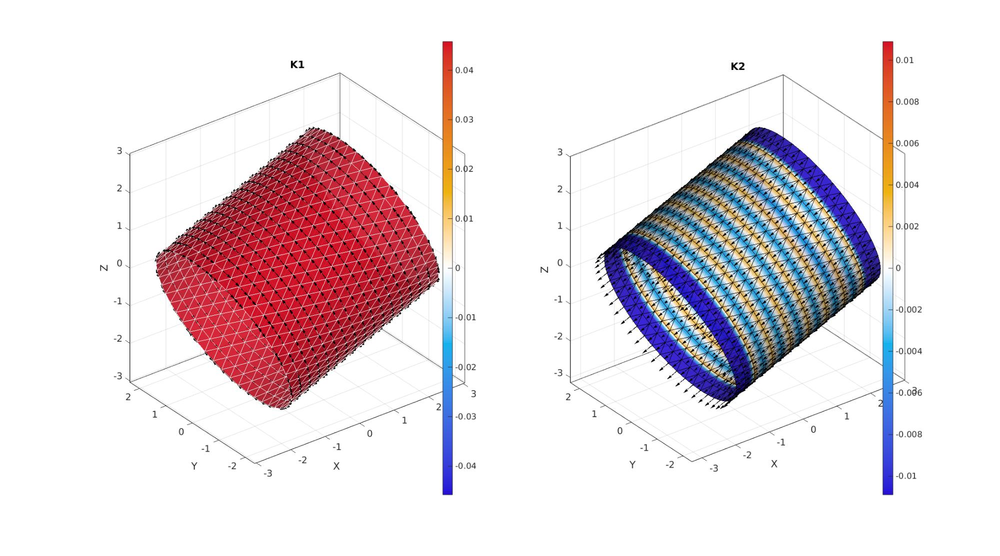

patchCurvature
Below is a demonstration of the features of the patchCurvature function
Contents
Syntax
[Vd,Fd,Fds]=patchCurvature(V,F);
Description
Computes curvature metrics for the patch data defined by the faces F and the vertices V.
Examples
clear; close all; clc;
Plot settings
cMap=warmcold(250);
% [F,V]=geoSphere(4,5.25); optionStruct.cylRadius=2.3; optionStruct.numRadial=50; optionStruct.cylHeight=2*optionStruct.cylRadius; optionStruct.numHeight=17; optionStruct.meshType='tri'; optionStruct.closeOpt=0; [F,V] = patchcylinder(optionStruct); Q = euler2DCM(rand(1,3)*pi); V = V*Q; % [F,V]=graphicsModels(9); % [F,V]=stanford_bunny; % [F,V]=tri2quad(F,V); % [F,V]=patchcylinder(60,100,60,60,'tri'); [~,~,N]=patchNormal(F,V); [a,d]=vectorOrthogonalPair(N); nz=[0 0 1];
Compute curvature
[U1,U2,K1,K2,H,G] = patchCurvaturePolynomial(F,V,2);
Visualize curvature on mesh
% Compute plot variables vecPlotSize=mean(patchEdgeLengths(F,V)); %Vector plotting size % Visualize cFigure; subplot(1,2,1); hold on; title('K1'); hp=gpatch(F,V,K1,'w',0.9); hp.FaceColor='interp'; colormap(gca,cMap); colorbar; quiverVec(V,U1,vecPlotSize,'k'); % quiverVec(V,N,vecPlotSize,'r'); % quiverVec(V,a,vecPlotSize,'g'); % quiverVec(V,d,vecPlotSize,'b'); % for i=1:1:size(V,1) % n=N(i,:); % Q = vecPair2Rot(n,nz)'; % quiverVec(V(i,:),Q(:,1)',vecPlotSize,'r'); % quiverVec(V(i,:),Q(:,2)',vecPlotSize,'g'); % quiverVec(V(i,:),Q(:,3)',vecPlotSize,'b'); % end axisGeom; c=max(abs(K1(:))); caxis(0.1*[-c c]); camlight headlight; subplot(1,2,2); hold on; title('K2'); hp=gpatch(F,V,K2,'k',0.9); hp.FaceColor='interp'; quiverVec(V,U2,vecPlotSize,'k'); colormap(gca,cMap); colorbar; axisGeom; c=max(abs(K2(:))); caxis(0.1*[-c c]); camlight headlight; gdrawnow;

GIBBON www.gibboncode.org
Kevin Mattheus Moerman, gibbon.toolbox@gmail.com
GIBBON footer text
License: https://github.com/gibbonCode/GIBBON/blob/master/LICENSE
GIBBON: The Geometry and Image-based Bioengineering add-On. A toolbox for image segmentation, image-based modeling, meshing, and finite element analysis.
Copyright (C) 2006-2023 Kevin Mattheus Moerman and the GIBBON contributors
This program is free software: you can redistribute it and/or modify it under the terms of the GNU General Public License as published by the Free Software Foundation, either version 3 of the License, or (at your option) any later version.
This program is distributed in the hope that it will be useful, but WITHOUT ANY WARRANTY; without even the implied warranty of MERCHANTABILITY or FITNESS FOR A PARTICULAR PURPOSE. See the GNU General Public License for more details.
You should have received a copy of the GNU General Public License along with this program. If not, see http://www.gnu.org/licenses/.